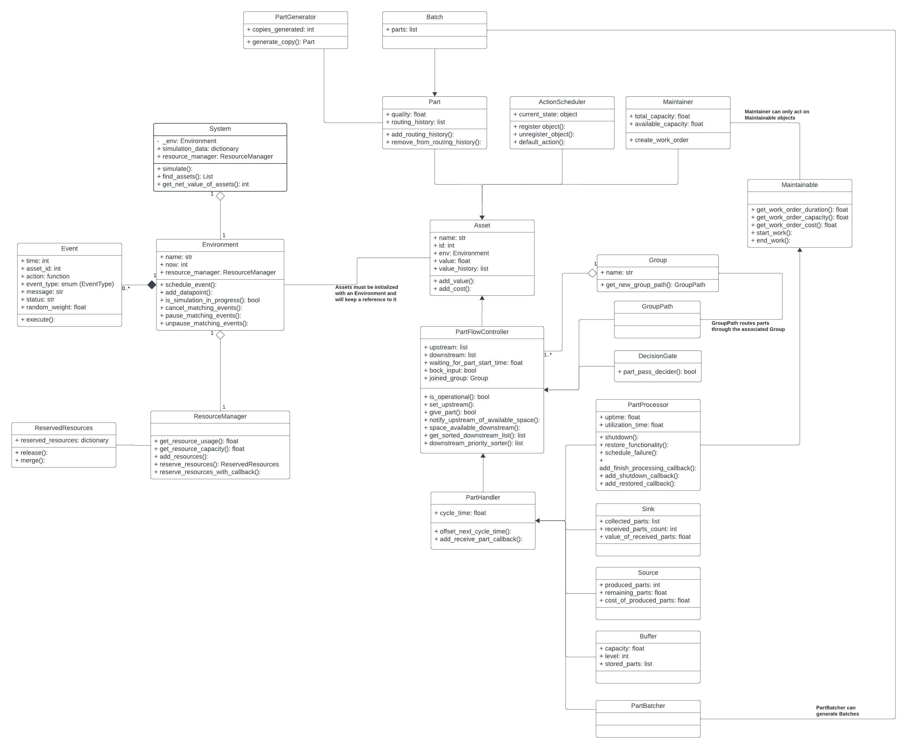
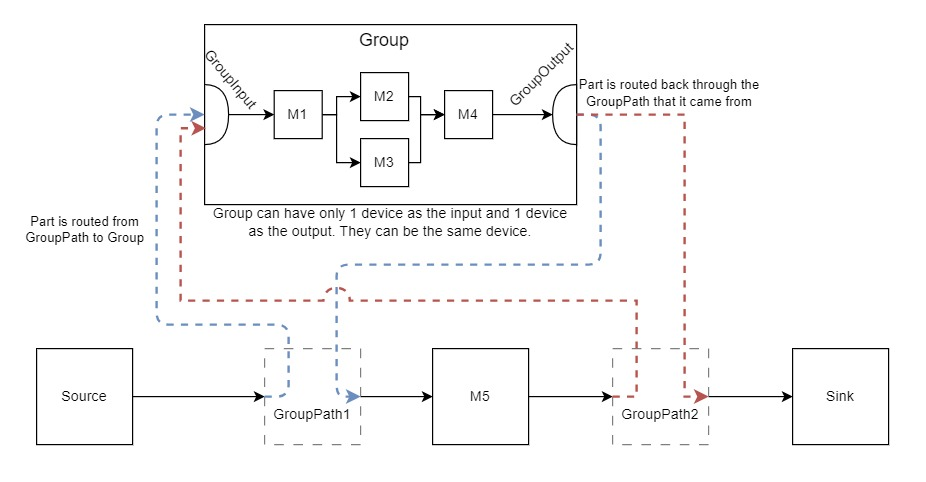

Code, a Deeper Look
This page provides a closer look at some of the components and systems in SimPROCESD.
Asset
Asset is a parent class to most of the SimPROCESD classes and is generally not used by itself; like an abstract class.
Asset provides a few features to all of its child classes:
Name tracking and name generation if no name is provided.
Assignment of a unique ID.
Registering self with the System.
Keeping a reference to the Environment object which can be used for checking simulation time, scheduling events, and more.
Value tracking and a record of asset’s value changes.
Class Diagram
Class diagram (UML style) that shows relationships between classes and some of the prominent properties and functions of each class.
{kind=link}
The diagram shows that PartProcessor is a child of the PartHandler class, which is a child of the PartFlowController class, which is a child of the Asset class. Functionality of PartProcessor is split in the following way:
Asset: track name, id, and value.
PartFlowController: relay parts from upstream to downstream.
PartHandler: retain parts received from upstream for a specified period before passing them downstream.
PartProcessor: hooks for processing received parts, a way to shutdown/restore itself, and support for maintenance to be performed on it.
Discrete Event Simulator
SimPROCESD is a discrete event simulator, it is driven by events. Initial events are created during initialization of the simulated objects and additional events are generated in the process of executing scheduled events.
Multiple events can be scheduled to happen at the exact same time in which case they are
executed in order of EventType priority
(represented by a number).
Example of how PartHandler schedules an event for when it should finish processing a part:
self.env.schedule_event( # Environment.schedule_event(...
self._env.now + next_cycle_time, # Simulation time when the event should execute.
self.id, # ID of the Asset whose action the event represents.
self._finish_cycle, # The action to be executed (a function/callable).
EventType.FINISH_PROCESSING, # Event type.
f'By {self.name}' # String with additional debugging information.
)
Group Class
Group class allows one or more connected part handlers to be bundled together in order to use those same part handlers multiple times in the same model.
{kind=link}